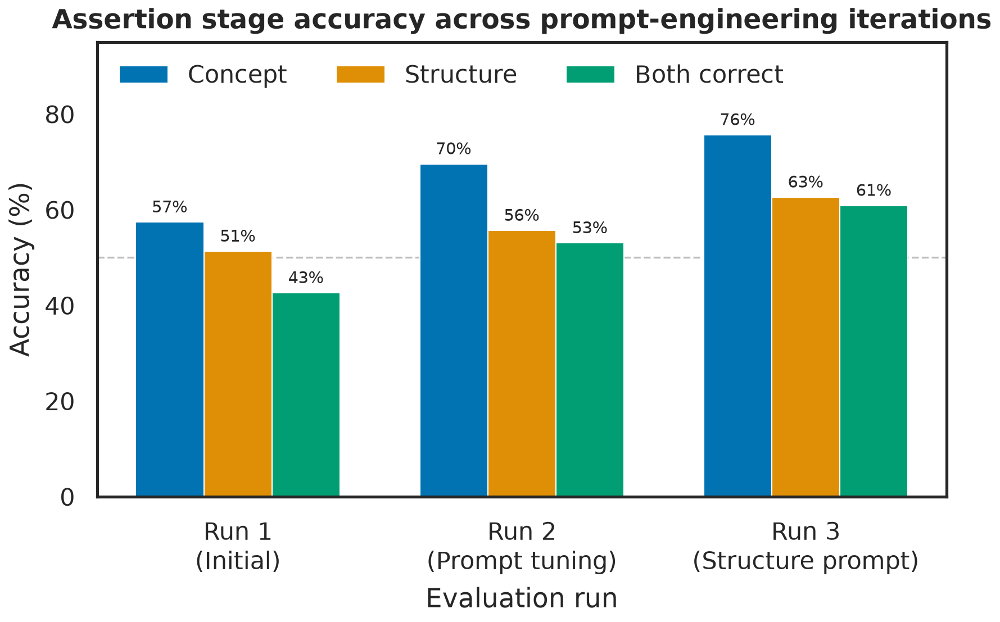
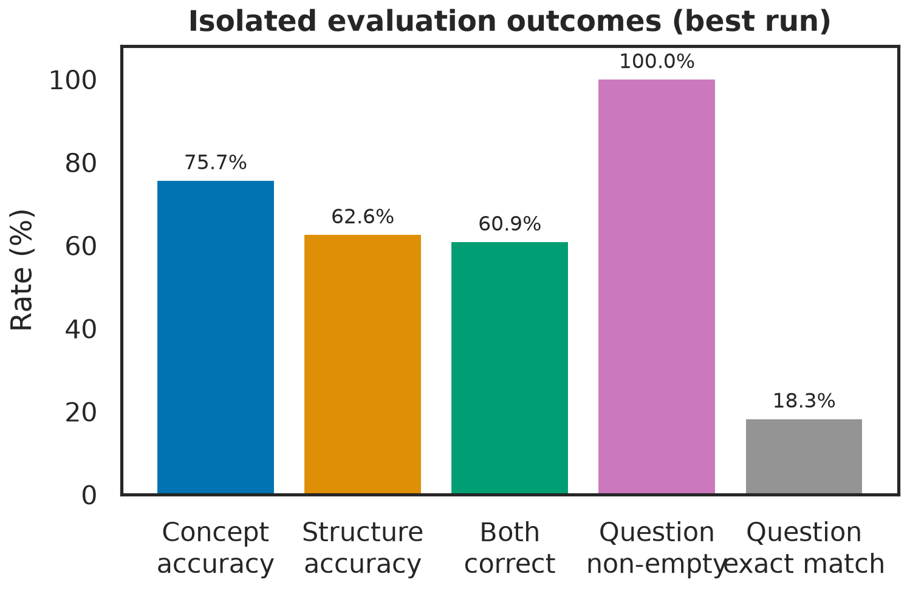
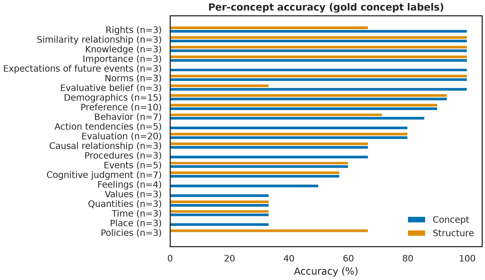
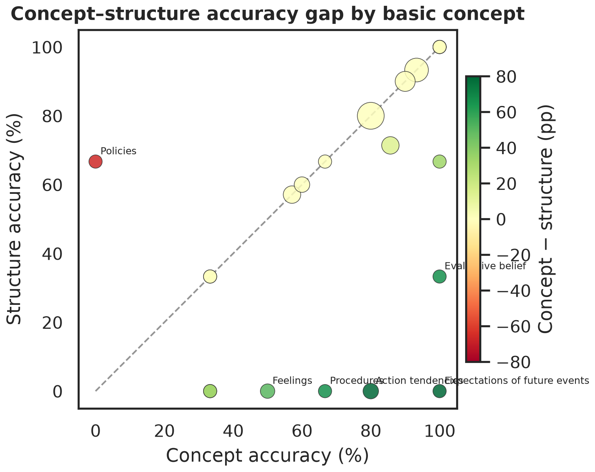
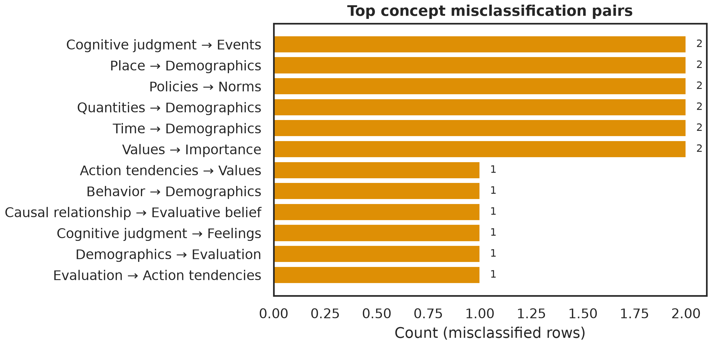
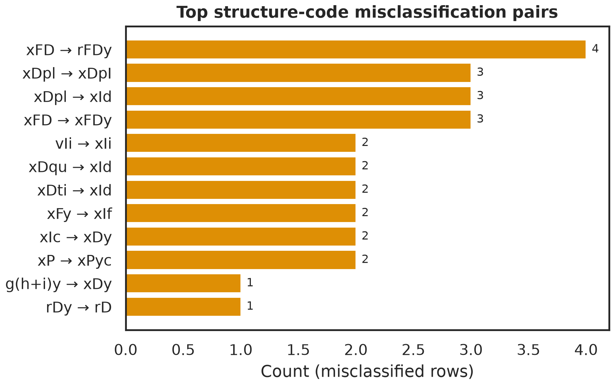
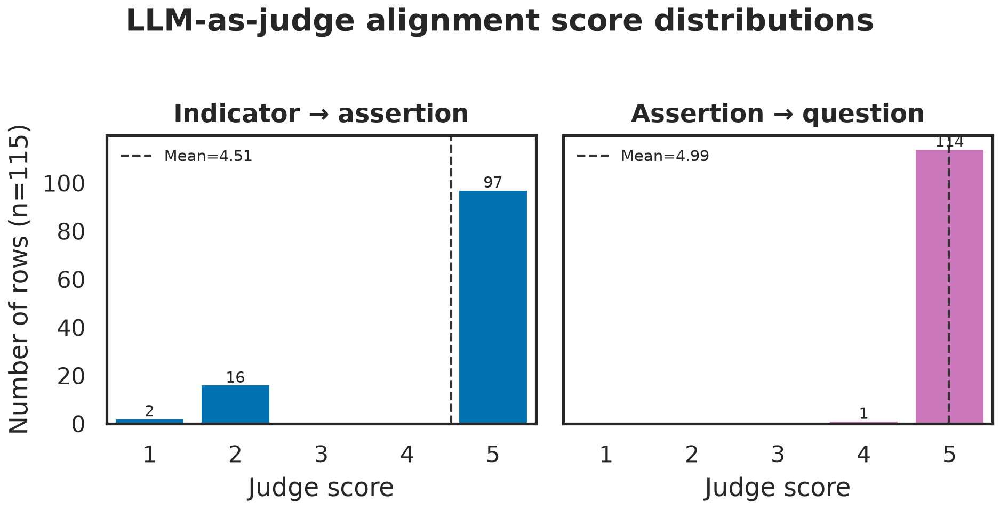
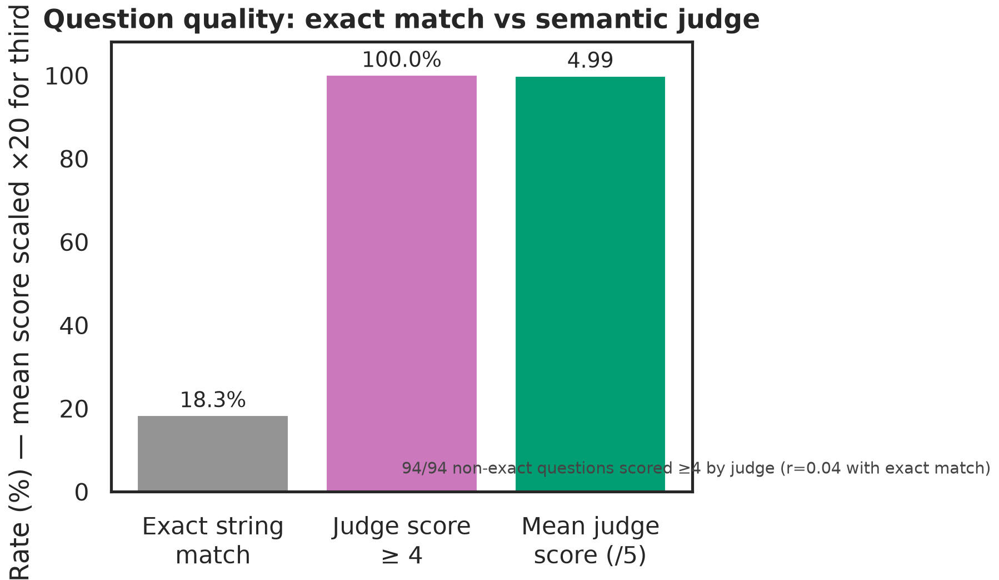
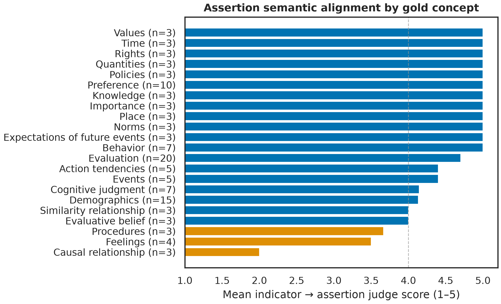

Evaluation (20), Demographics (15), Preference (10) dominate. Many concepts have only n = 3.
Concept
n
Evaluation
20
Demographics
15
Preference
10
Behaviour / Cognitive judg. / …
7
Action tendencies / Events
5
Feelings
4
13 other concepts
3 each
Key consequence: 115 rows is enough to evaluate a model, but too few to reliably fine-tune one → motivates a prompting-first approach.
Methodology
A tight prompt-engineering loop
Write / improve prompt
→
Run on all 115 rows
Qwen3.5-9B on LRZ
→
Score & analyse errors
confusion matrices
↻
Three prompt-engineering iterations (Runs 1–3), each targeting the biggest error category from the last run, with no model training. Run 4 re-scores Run 3's exact outputs with an LLM-as-judge to measure semantic quality.
1
Initial zero-shot
2
Prompt tuning
3
Structure focus
4
+ Semantic judge
Design decisions
Why these tools?
Choice
Why we made it
Prompting before fine-tuning
Only 115 examples, too few to train reliably. Prompting is cheap, fast to iterate, and interpretable: we can read exactly why a choice was made. It sets an honest baseline before any training.
Guarantees machine-parseable output and forces the model to pick a valid concept from the 22: it cannot invent categories.
enable_thinking = false
Qwen3.5 otherwise emits long reasoning prose that breaks JSON parsing. Disabling it gave reliable structured answers.
Isolated evaluation
Score each agent independently: the Question Developer is fed the gold assertion, not the model's own. Errors don't compound, so we can localise failures.
Normalization layer
Fair scoring: unify Behavior=Behaviour, extract the structure code from messy text, without ever editing the gold file.
How we measure success
Evaluation metrics
Assertion stage
• Concept accuracy: right category?
• Structure accuracy: right code?
• Both correct: the strict bar
Question stage
• Coverage: produced a non-empty question?
• Exact match vs gold wording
• Question format classified
Note:
Exact string match understates quality. "How satisfied are you with this product?" vs "…with your product?" are both perfect, but don't match exactly.
→ Run 4 adds an LLM-as-judge alignment score (1–5) that measures meaning, not strings.
Key Findings
Three iterations of prompting: steady gains

Concept
57% → 70% → 76%
Structure
51% → 56% → 63%
Both correct
43% → 53% → 61%
+18pp concept, +11pp structure, with no training, just better prompts & scoring.
Key Findings: what drove the gains
What each iteration changed
Run
What we changed
Concept
Structure
1 · Initial
Plain zero-shot prompt with the rulebook
57%
51%
2 · Prompt tuning
UK/US spelling normalization · concept enum constraint · disambiguation table + worked examples for confused concepts
Same outputs as Run 3 · adds LLM-as-judge semantic scores (config flag only, no prompt/model change)
= 76%
= 63%
Each change targeted the previous run's biggest error bucket
Run 1's spelling + confusion errors → fixed in Run 2. Run 2's structure-code gap → targeted in Run 3. Error-driven, not random tweaking.
Key Findings: best run
Where we landed

75.7%
Concept accuracy
62.6%
Structure accuracy
100%
Question coverage
Question generation always produces a sensible question. Exact-match is only 18%, but that's the metric's strictness, not bad questions (see examples).
Key Findings: by category
Some concepts are easy, some are hard

Near-perfect
Evaluation, Demographics, Preference, Importance, Knowledge, Norms, Rights
The pattern
Frequent, well-defined concepts are easy; rare, abstract ones (Policies, Place, Values, Feelings) are hard.
Key Findings: the core insight
Structure codes are the bottleneck

Takeaway: Identifying what is measured is largely learnable by prompting; pinning the exact grammar code is the remaining hard problem.
Points below the diagonal = concept right, but structure wrong.
Whole concepts get the category right yet score 0% on structure: Expectations of future events, Action tendencies, Feelings, Procedures.
Structure codes are fine-grained and theory-laden: e.g. intention (rFDy) vs future event (xFD), distinctions even experts debate.
Key Findings: error analysis
Where it goes wrong (and why it's reasonable)

Concept confusions

Structure-code confusions
Cognitive judgment→Events, Place/Quantities/Time→Demographics, Policies→Norms · structure: xFD→rFDy (future event vs intention), xPRy↔xIpr. These are semantically adjacent: the model lands one cell away, not wildly off.
Key Findings: concrete examples
What the outputs actually look like
Indicator
Model output
Verdict
Overall satisfaction with product
Evaluation · xIe · "I am satisfied with this product." → "How satisfied are you with this product?"
concept ✓ structure ✓
Repurchase intention
Action tendencies · rFDy (gold xFD) → "How likely are you to purchase… again?"
concept ✓structure ✗
Immediate safety concerns
Feelings (gold Events), latched onto the word "concerns"
concept ✗
Assertions and questions are fluent and plausible; remaining errors are taxonomy nuances, not broken language.
Run 4: does it actually write good items?
LLM-as-judge: semantic alignment scores (1–5)

4.51
Indicator → assertion (/5)
4.99
Assertion → question (/5)
99%
Rows scored ≥ 4
A judge model rates how faithfully each output captures its input. Same outputs as Run 3: this adds meaning-based scoring on top of the exact-match numbers.
Run 4: the key methodological finding
Exact match was measuring the wrong thing

Takeaway
The low exact-match was a metric artefact, not bad questions. We report judge alignment for the question stage.
Exact match: 18%. Judge ≥ 4: 99%.
94 / 94 questions that did not match the gold string still scored ≥ 4 for meaning.
Correlation between exact match and judge: r ≈ 0.04, essentially none.
Discussion
What it means
An off-the-shelf 9B model, with careful prompting and zero training, reaches ~76% concept / ~63% structure on a 22-way expert taxonomy: a strong baseline.
Concept identification is largely solvable by prompting + good examples + output constraints.
Structure assignment is the genuine frontier: fine distinctions, rare codes, theory-dependent.
Question generation is essentially solved: the judge scores it 4.99/5; the 18% exact match was a metric artefact, not a quality problem.
Even when the taxonomy label is wrong, assertions still read as faithful paraphrases (judge 4.21 vs 4.61 when correct); taxonomy errors ≠ broken meaning.
One catch: the judge is the same model (self-grading) → scores may be optimistic; an external 72B judge is the honest next check.
Discussion
Limitations
Data
115 rows; many concepts at n = 3 → noisy per-concept estimates. One annotator's scheme.
Metric
Exact-match understates question quality; judge scores exist but are self-graded, with no human or external-judge check yet.
Model & runs
Single model, greedy decoding (temp 0), single run → no variance estimates.
Task ambiguity
Some concept/structure distinctions are inherently debatable, even for experts: a ceiling on achievable accuracy.
Conclusion & Next Steps
Takeaways
A prompt-driven pipeline turns raw indicators into theory-grounded survey items end-to-end.
Iterative, error-driven prompting added +18pp concept accuracy with no training.
Structure codes are the frontier; the LLM-as-judge confirms questions are excellent (4.99/5) despite low exact match.
Next steps
External judge (Qwen2.5-72B) to remove self-grade bias
Assertion alignment when concept is correct vs incorrect

Mean indicator→assertion score by gold concept
Appendix: Gold Dataset Samples
Examples of ground-truth annotations (n=115)
Indicator
Concept
Structure
Assertion
Question
Overall satisfaction
Evaluation
xIe
I am satisfied with this product.
How satisfied are you with your product?
Expectations met
Evaluative belief
xPyc
This product met my expectations.
How well did this product meet your expectations?
Desired improvement
Preference
xPRy
I would prefer a change in a particular aspect of my experience.
What one thing would most improve your experience?
Repurchase intention
Action tendencies
rFDy
I intend to purchase from this organization again.
Likelihood of purchasing from you again?
Emergency contact
Demographics
xId
My emergency contact is [person].
Who is your emergency contact?
Exercise frequency
Behaviour
rDy
I engage in physical exercise regularly.
How often do you engage in physical exercise?
Subjective items focus on internal states/evaluations and typically map to rating scales.
Objective items focus on facts/behaviors and map to frequency or open-ended formats.
Anticipated questions
Quick answers to the obvious "why?"s
Question
Answer
Why not GPT-4 / Claude?
Privacy, cost, reproducibility, and it must run on LRZ. An open model is the research-friendly choice, and we keep a stronger model in reserve as the judge.
Why 9B, not 72B?
Fits one GPU → fast iteration. The 72B is earmarked for LLM-as-judge to avoid self-grading bias.
Why isolated evaluation?
So one stage's errors don't contaminate the other, letting us localise the bottleneck (the assertion stage).
Is 76% good?
For a 22-way expert taxonomy with zero training, yes, and it was still climbing each iteration.
Isn't the judge the model grading itself?
Yes, and scores may be optimistic because of that. We flag it and plan an external 72B judge. But judge vs exact-match correlate at r≈0.04, confirming exact match misses genuine quality.